Biography
News Recent Updates
CVPR 2026 paper accepted.
Congratulations for Dr. Gao !
Publications
(C: Conference | J: Journal | P: Preprint | *: Equal Contribution)
Conference

C2FG: Control Classifier-Free Guidance via Score Discrepancy Analysis
CVPR 2026
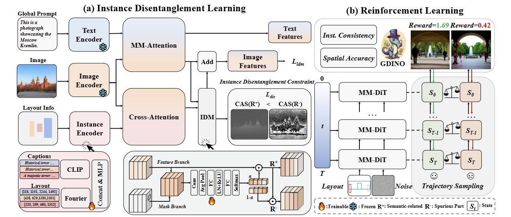
I-DRUID: Layout to Image Generation via Instance-Disentangled Representation and Unpaired Data
ICLR 2026
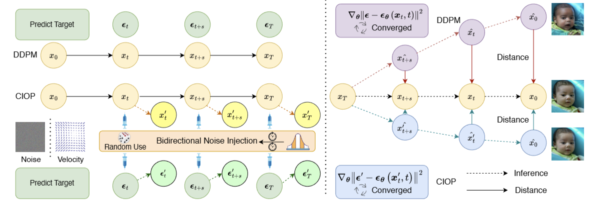
Bidirectional Noise Injection: Enhancing Diffusion Models via Coordinated Input-Output Perturbation
AAAI 2026 Oral
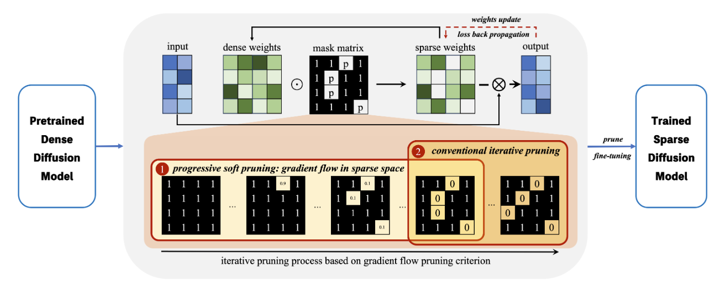
Pruning for Sparse Diffusion Models based on Gradient Flow
ICASSP 2025 Oral
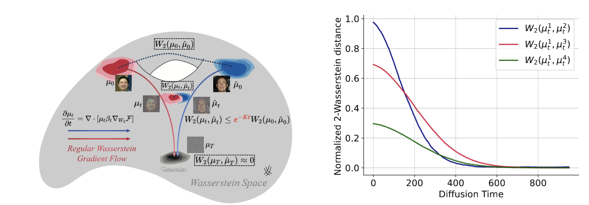
Non-uniform Timestep Sampling: Towards Faster Diffusion Model Training
ACM MM 2024
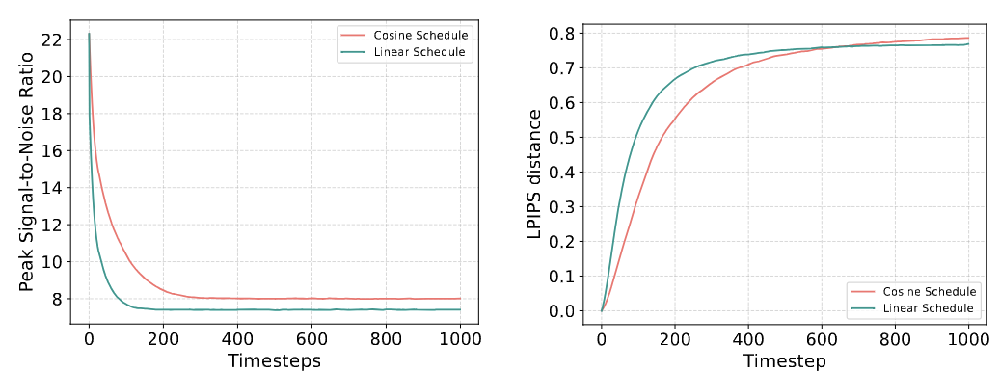
Beta-Tuned Timestep Diffusion Model
ECCV 2024
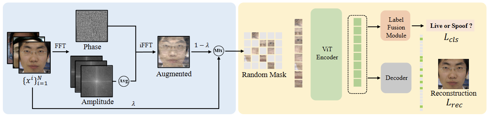
FAMIM: A Novel Frequency-Domain Augmentation Masked Image Model Framework for Domain Generalizable Face Anti-Spoofing
ICASSP 2024 Oral
Journal
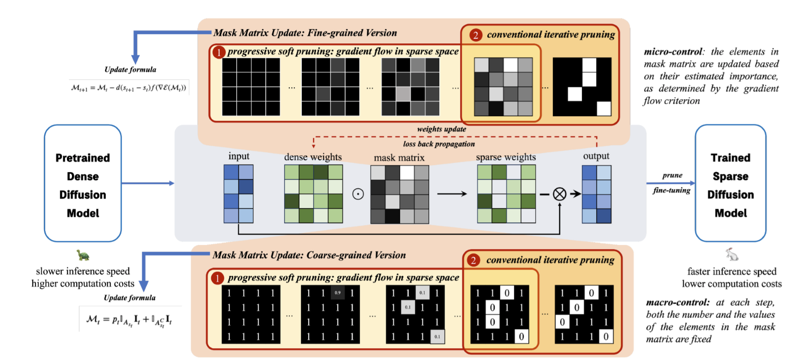
Gradient Flow-Based Iterative Pruning for Efficient and High-Quality Lightweight Diffusion Models
Neural Networks (NN) 2025
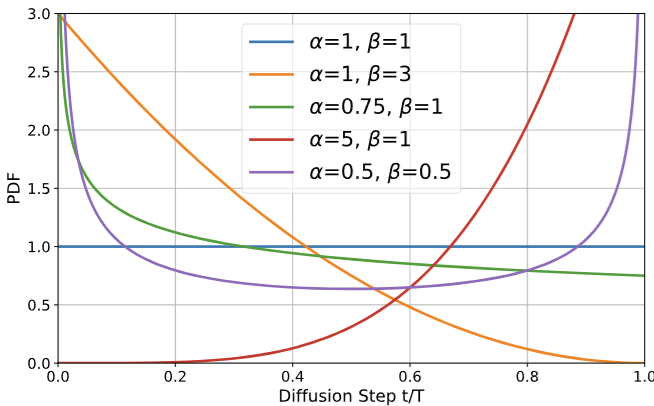
Bidirectional Beta-Tuned Diffusion Model
IEEE T-PAMI 2026
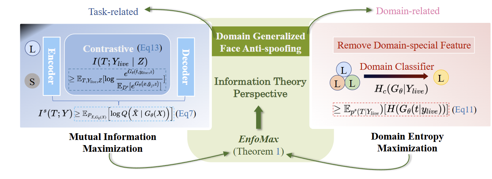
EnfoMax: Domain Entropy and Mutual Information Maximization for Domain Generalized Face Anti-Spoofing
Neurocomputing (NC) 2025
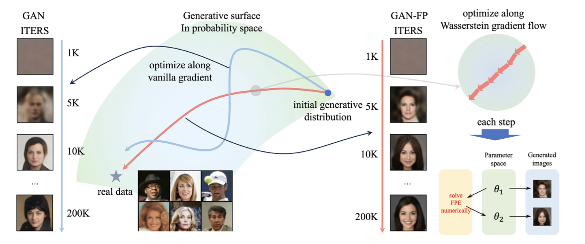
Enhancing the Accuracy of Generative Adversarial Networks with Fokker-Planck Equations
Neurocomputing (NC) 2025
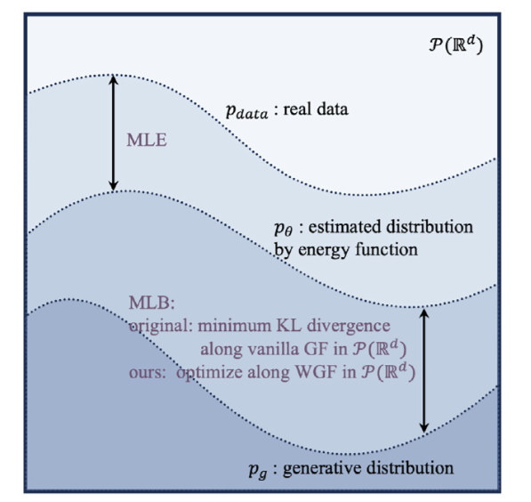
EBM-WGF: Training Energy-based Models with Wasserstein Gradient Flow
Neural Networks (NN) 2025
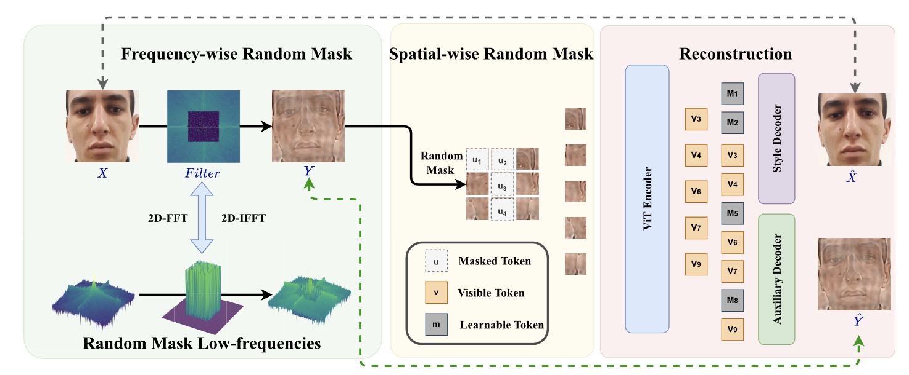
MFAE: Masked Frequency Autoencoders for Domain Generalization Face Anti-Spoofing
IEEE T-IFS 2024
Preprint
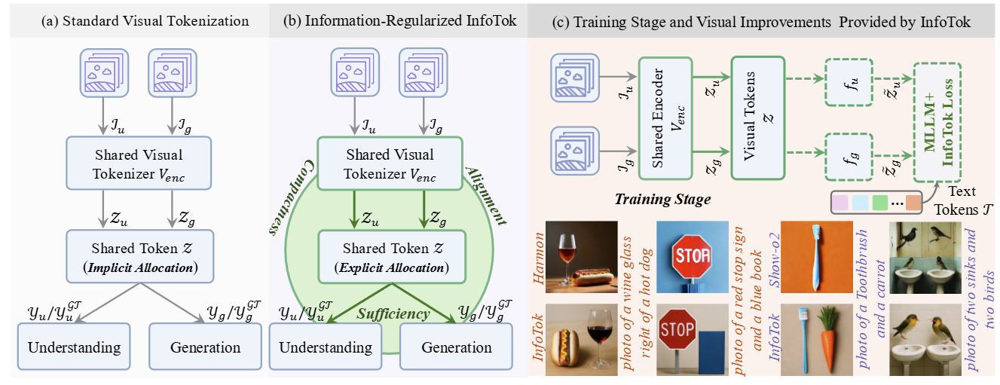
InfoTok: Regulating Information Flow for Capacity-Constrained Shared Visual Tokenization in Unified MLLMs
arXiv 2026
Research Experiences
WorkResearcher
Jul. 2025 - Present
- Focused on improving diffusion model architectures, including training efficiency, sampling quality, and controllability.
- Explored multimodal large language models (MLLMs), with emphasis on visual understanding and generation alignment.
InternResearch Intern
Mar. 2025 - Jun. 2025
- Investigated controllable image generation, focusing on the automated generation of advertising assets.
- Explored techniques for achieving fine-grained control over generative outputs in diffusion-based frameworks.
InternResearch Intern
Oct. 2023 - Mar. 2025
- Investigated the application and improvement of diffusion models for image generation and edit tasks.
InternResearch Intern
Jan. 2021 - Oct. 2023
- Conducted research on computer vision algorithms with a focus on self-supervised learning and representation learning for visual understanding.
- Explored domain generalization methods to improve model robustness across different data distributions, particularly for face anti-spoofing.
InternResearch Intern
Jul. 2021 - Dec. 2021
- Explored efficient inference techniques for deep learning models.
Honors & Awards
BYD Scholarship, Shanghai Jiao Tong University
University level
2025
Outstanding Graduate Scholarship, Xidian University
University level
2020